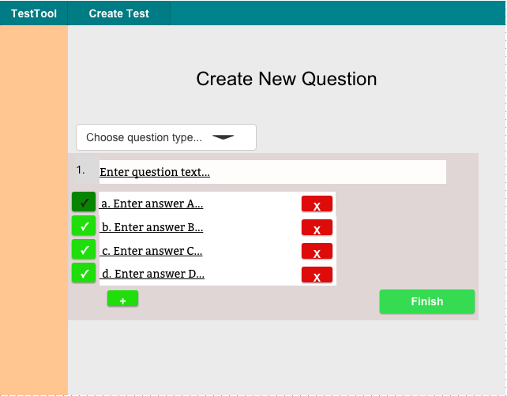

2.3.3. Creating Questions

Figure 1: Initial question creation screen.
The default question type is multiple choice. The question type can be changed in the dropdown menu as seen on the right in Figure 1. Underlined fields in the question forms can be edited.

Figure 2: Filled-in multiple choice form.
The filled-in multiple choice form will show the answers that have been entered. The green button on the left side marks an answer as correct, and only one answer can be marked correct. The current correct answer's button is darkened. Answers may be added or removed, down to a minimum of 2.

Figure 3: Long-answer question form.
If the user selects long-answer from the dropdown, the question form changes as seen in Figure 3. The long-answer question form has a text input box which is disabled, to show what students will see when taking the test. The question prompt is underlined to show it is editable.

Figure 4: Code question form.
If the user selects code from the dropdown, the question form changes as seen in Figure 4. The code question form has a prompt similar to the long-answer form. It also has a text input to show any formatted code that may be required for the test question (for example, a Java class or enum for a CPE 102 exam). It also includes a disabled text field similar to the long-answer form, and a button to upload a grading script (for which the UI is not yet defined).
Figure 5: Matching question form.
If the user selects matching from the dropdown, the question form changes as seen in Figure 5. Each element in the left column corresponds to the same line in the right column. Both columns have editable fields, similar to the multiple-choice options. On the test taking view, the options will be randomized.
Once the user has filled out their desired question form, the user clicks "Finish" and is returned to whichever view brought them to the Create Questions form (Test Bank or Edit Test).